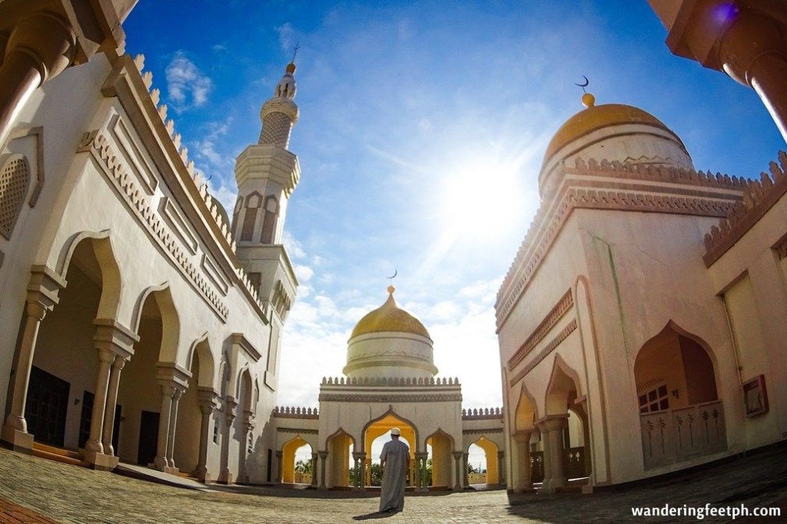
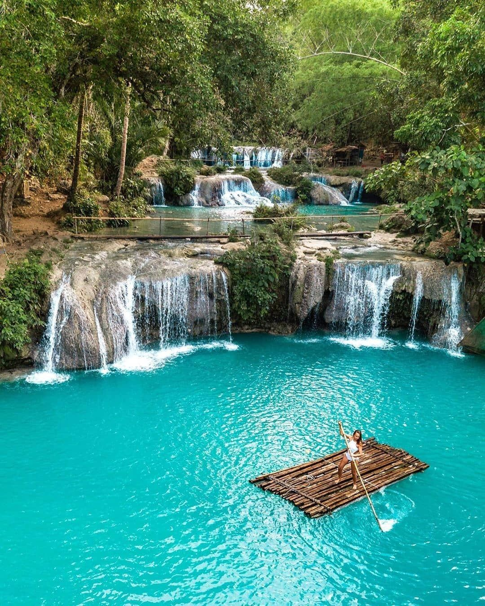

Top 10 Destinations

Siargao Island

Mount Apo

White Island (Camiguin)

Lake Venado

Maria Cristina Falls

Tinago Falls

Cagayan de Oro White Water Rafting

Lake Sebu
Historical Destinations




Nature Escapes

Other Attractions





Walang komento pa. Maging una!